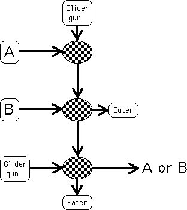

|  |
| Suppose A has a 1 and B has a 0 in the current location. |
| The glider in the A stream kills the glider in the top glider gun stream, so the top glider gun stream transmits a 0 to B. |
| There is no glider in the B stream to pass through the hole in the top glider gun stream, so the hole in the top glider gun stream continues on to the left glider gun stream. |
| The glider in that stream passes through the hole in the top glider gun stream, contributes a 1 to the current location of A or B. |
| That is, if A is 1 and B is 0, A or B is 1. |
Return to the or operation.